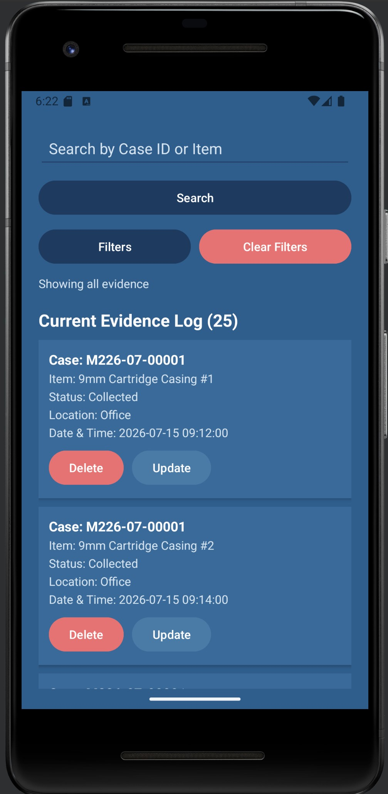
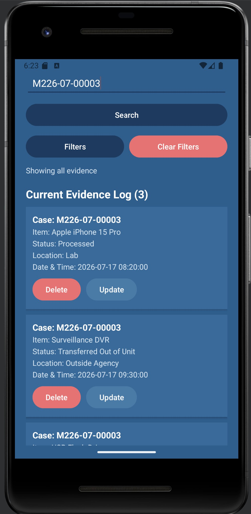
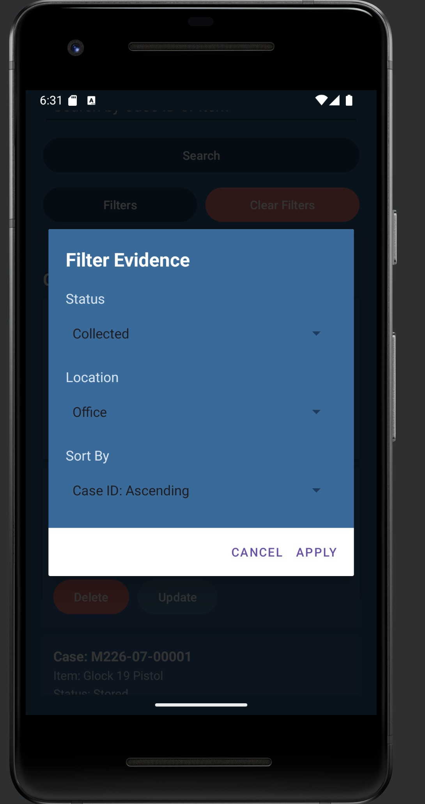
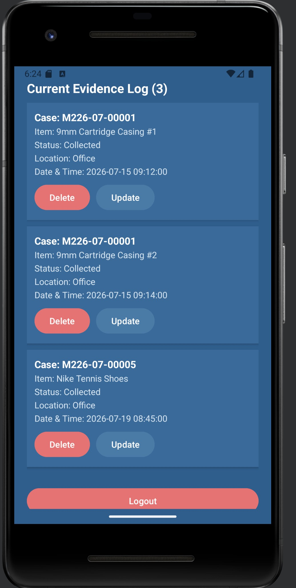
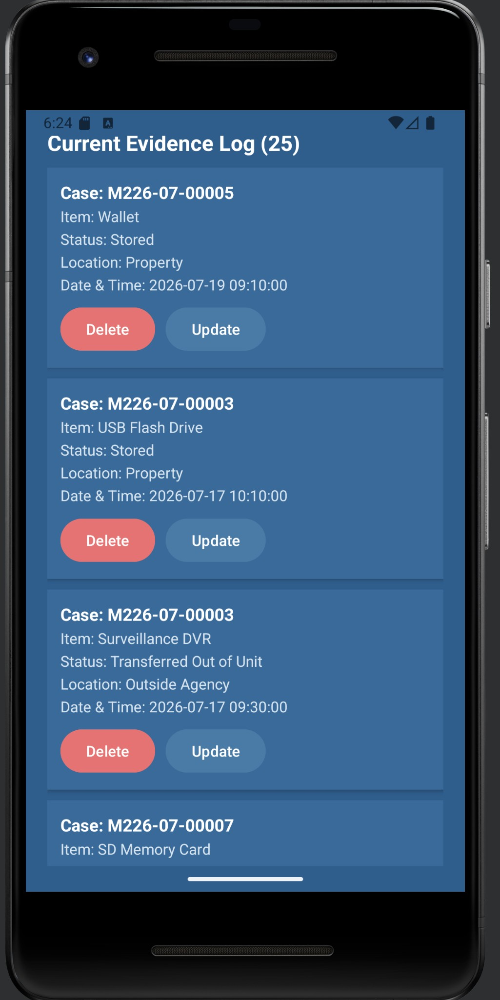

EvidenceItem
Represents one evidence record and keeps its associated values together in a reusable object.
CS 499 Computer Science Capstone
Enhancement Two
This enhancement focused on improving how the Evidence Tracker locates, organizes, and displays evidence records. The original application allowed users to browse the full evidence list, but it did not provide search, filtering, or sorting features.
Search functionality was added for case IDs and item descriptions. Filtering was added for evidence status and storage location, while sorting options allow records to be organized by case ID, description, status, or location. These enhancements improve usability as the number of stored evidence records increases.
The original application stored and displayed evidence records through a RecyclerView connected to data retrieved from a local SQLite database. Users could scroll through the entire collection, but there was no way to quickly locate a specific case or item.
This approach met the original course requirements, but it became less efficient as the number of evidence records increased. Users had to manually review the full list and could not customize the displayed order or narrow the records according to evidence status or location.
Search functionality allows users to locate evidence by case ID or item description. The application compares the entered search value against each evidence record and places matching records into a separate filtered collection.
The original collection remains unchanged, allowing the user to clear the search and immediately return to the complete evidence list without performing an additional database query.


String searchValue =
searchInput.trim().toLowerCase();
filteredEvidence.clear();
for (EvidenceItem evidence : allEvidence) {
String caseId =
evidence.getCaseId().toLowerCase();
String description =
evidence.getItem().toLowerCase();
if (caseId.contains(searchValue)
|| description.contains(searchValue)) {
filteredEvidence.add(evidence);
}
}
evidenceAdapter.updateData(filteredEvidence);Filtering allows users to narrow the evidence collection according to evidence status and storage location. The application begins with the full collection and evaluates each record against the selected criteria.
Only records that satisfy the active filter conditions are added to the filtered list. Search terms, filters, and sorting choices can be combined within the same workflow without modifying the original evidence collection.


Multiple sorting options allow evidence records to be organized by case ID, item description, status, or location. Users can choose ascending or descending order depending on the selected field.
Sorting occurs after the current search and filter conditions have been applied. This produces a final result set that contains only the relevant records and arranges them according to the user's selected preference.
The same evidence collection can therefore support multiple views without changing the records stored in SQLite.

Search, filtering, and sorting operate as parts of one processing sequence. The order of these operations affects the final information displayed to the user.
Retrieve the evidence records and preserve them in the full evidence list.
Select records matching the entered case ID or item description.
Retain only records matching the selected status and storage location.
Arrange the remaining records according to the chosen field and direction.
Send the filtered collection to the RecyclerView adapter and display the result count.
Restore the complete list without reloading the records from the database.
The application uses evidence objects and Java collection classes to organize records while they are processed and displayed. Each EvidenceItem object groups related evidence fields such as case ID, item description, status, location, and timestamp.
Two list structures support the algorithmic workflow. One list preserves the complete dataset, while a second list holds the records that currently match the user's search, filter, and sorting selections.
Represents one evidence record and keeps its associated values together in a reusable object.
Preserves every evidence record retrieved from the SQLite database.
Stores only the records that match the active search, filtering, and sorting conditions.
Searching and filtering the in-memory evidence collection generally require examining each record, producing a linear time complexity of O(n). This is appropriate for the current local dataset and keeps the algorithm straightforward to test and maintain.
Comparison-based sorting typically operates in O(n log n) time. Because sorting is applied only to the current result set, the application avoids repeatedly sorting records that have already been removed by search or filtering.
The enhanced application allows users to quickly locate and organize evidence records according to investigative needs. Search reduces the need for manual scrolling, filtering narrows the displayed evidence, and sorting provides a predictable record order.
Maintaining separate complete and filtered collections also improves flexibility. Search terms, filters, and sort options can be cleared without repeatedly retrieving the same evidence records from SQLite.
This enhancement demonstrated that effective algorithm design involves more than producing the correct result. It also requires considering efficiency, maintainability, and how several features interact within the same workflow.
Search, filtering, and sorting were each manageable individually, but combining them required additional planning. Every operation had to update the displayed evidence without modifying the original dataset or disrupting the application's existing functionality.
Creating a separate filtered list was one of the most important design decisions. The complete collection remains intact, while the displayed results change dynamically. This approach simplifies clearing search and filter options and prevents unnecessary database queries.
The enhancement strengthened my understanding of how algorithms and data structures affect the user experience. The Evidence Tracker now provides a more practical method for locating and organizing evidence information.